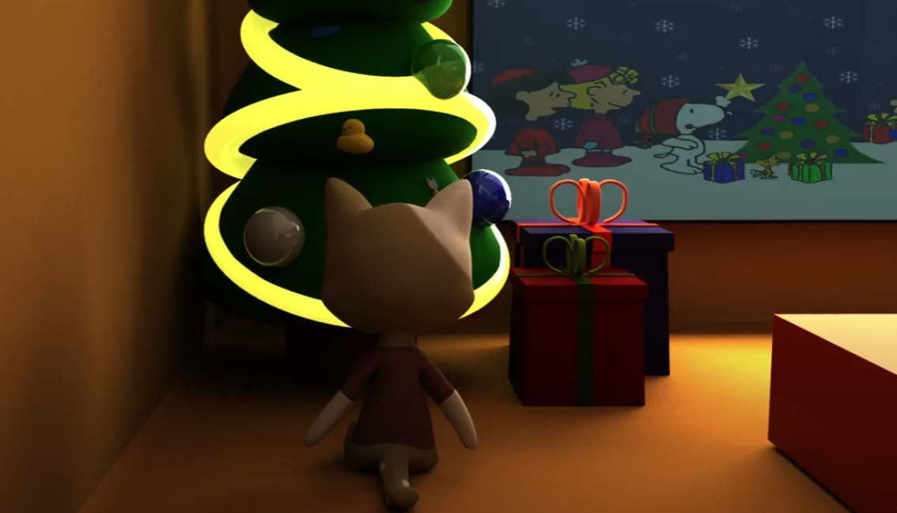

Project Overview
About This Project
Meowy Christmas is a simple story about a cat looking for items and ornaments to decorate its tree to celebrate Christmas. This is a group project made by Andrew Ang, Hsuan-Ying Chao, Kejing Ren, Eric Liu and Stella Nguyen, who started on the project as beginners to Maya. After many script ideas, we were inspired to proceed with this story for the festivity as we would be able to deliver it by the time Christmas approaches.
I was responsible for brainstorming and scripting for several initial storylines, cat’s concept art, modelling the environment with furniture, cat and penguin characters’ second rigging, texturing the environment, scene animations & renderings, and some initial video editing.
Difficulties and Solutions
Modelling the Environment
During the process of animations, more issues emerged. I spent a lot of time modeling the environment – the living room and kitchen with basic furniture. I tried to make everything which won't move to stick to the room, but soon I realized it would create more issues Because the room would fill with unnecessary lines and polygons. So I tried to fix the model again and made everything into independent pieces. There are still some issues with the model because fixing a model is much more complicated than building a model. But I tried to make everything smooth and no Ngons as much as possible.
- Texturing the Environment
I textured the room twice. For the first time, I textured them into a modern style, which is basically white and gray. Then my teammates suggested we should use a cartoon color tone that fits our character and story more. So I retextured everything into a warm cartoonish color. There were some other difficulties while using Maya as well, but I overcame them by searching for more tutorials online.


Characters Modelling And Rigging
I also encountered some obstacles for the cat and penguin's rigs. I couldn't open them properly. So I ended up re-rigged both cat and penguin characters again for animations. I also made some adjustments by repainting the skin weights in Maya to generate another rigging version for both of the characters. I use them for all my animations. I also tried fixing scene 19 because the character was not in the room before. It is very painful to fix the scenes. I also asked Eric's help while fixing the scene, but it was unsuccessful because we could not move and scale a fully animated character.


Time Management
And due to technical issues, I animated and rendered half of the scenes in this project individually, and I also helped my teammates with their scenes as they could not render the scenes on their current laptops. I ended up spending a large amount of time finishing this project. Because I knew that rendering would take a long time on my computer, I planned everything accordingly and finished other school works early so we could submit our assignment on time.
Takeaways
Particle Systems
Although there are still some technical issues in the animations, I put much effort into this project and tried to make the animation as best as I could. I kindly want the audience to notice the particle systems for the snow and firewood. I tried to make them as realistic as possible, which took a great amount of time to render.


Eyes' Inner Glow & Emission Effects
Taking inspiration from the cute eyes in Disney Pixar’s Turning Red, we attempted to recreate these eyes for the cat in Scene 5. There weren't many Maya tutorials on stylized eyes online. However, utilizing the existing tutorials on the human eyes, we adapted the techniques and experimented on the shapes and inner glow/emission effects to achieve a similar look that’s most suitable for our cat character.
Rigging
In addition to the particle systems, I also want the audience to notice the cat character's rigging. I especially painted the skin weights to ensure the tail movement linked smoothly with the cats' movement. With realistic tail movements, I could make some animations that implement Disney animation principles.

Disney Animation Principles
Furthermore, we would really appreciate it if the audience could notice our animations. We applied several Disney animation principles, such as 'slowing in and slowing out' and 'anticipations.' We tried to make all the movements slow at the beginning and end. For example, the cat sat here slowly and waved hands faster in the middle part, then slowed down again at the end. Anticipations are also involved in our animations, trying to hint at the audience before the actual movement. For example, in the scene where the cat takes a few steps back and tries to look at the top of the tree, the cat tries to lean back several times before he steps back. Like figures 13, 14, and 15 illustrated, the audience will share the anticipation of the cat's stepping back and won't feel weird when the cat does the movement.
Contact Me